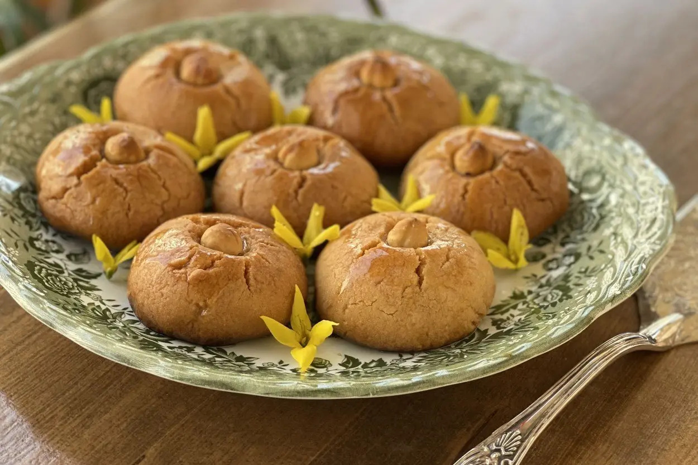

Sekerpare Recipe
Sekerpare is a Turkish dessert. It is made from flour, sugar, and butter. It is baked and then soaked in a sugar syrup. It is delicious.
Ingredients:
- 1 cup of flour
- 1/2 cup of sugar
- 1/2 cup of butter
- 1/2 cup of almonds
- 1/2 cup of sugar for the syrup
- 1/2 cup of water for the syrup
Instructions:
- Mix the flour, sugar, and butter together in a bowl.
- Form the dough into small balls and place them on a baking sheet.
- Press an almond into the center of each ball.
- Bake at 350 degrees for 15 minutes.
- While the cookies are baking, make the syrup by boiling the sugar and water together.
- When the cookies are done, pour the syrup over them.
